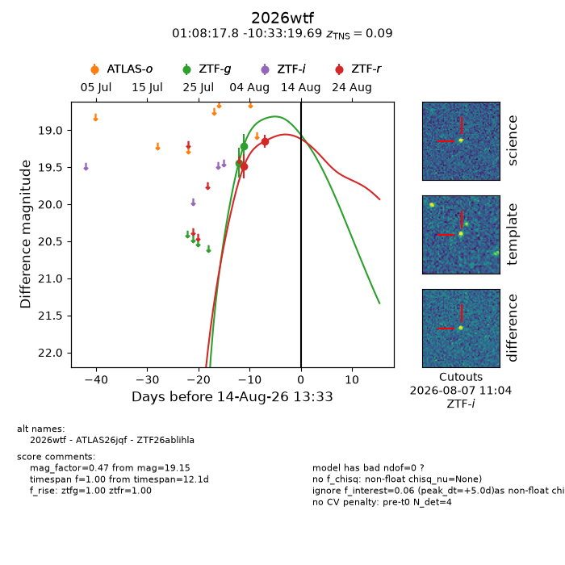
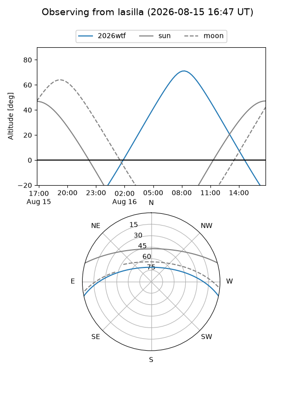
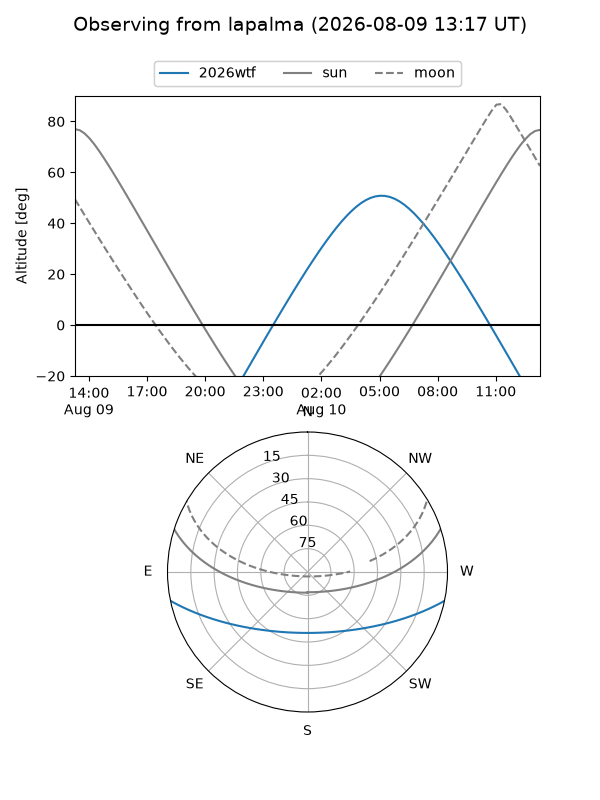
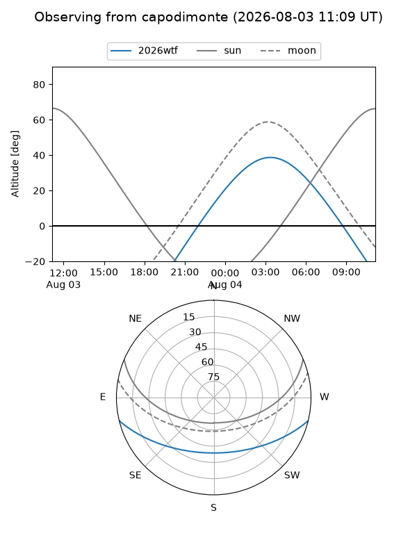
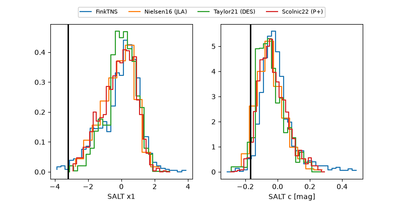

2026wtf
Target 2026wtf at 2026-08-14 13:35
Aliases and brokers:
FINK-ZTF: ztf.fink-portal.org/ZTF26ablihla
Lasair-ZTF: lasair-ztf.lsst.ac.uk/objects/ZTF26ablihla
ALeRCE-ZTF: alerce.online/object/ZTF26ablihla
YSE-PZ: ziggy.ucolick.org/yse/transient_detail/2026wtf
TNS name: wis-tns.org/object/2026wtf
Direct TNS query: direct search
alt names
ZTF26ablihla (ztf,fink_ztf)
2026wtf (tns,yse)
ATLAS26jqf (atlas)
Coordinates:
equatorial (ra, dec) = 17.0744,-10.55547
equatorial (HMS+DMS) = 01:08:17.84,-10:33:19.69
galactic (l, b) = (137.2049,-72.95833)
Flags:
TNS type: SN Ia
TNS redshift: 0.0900
peak dt: +5.0
Photometry:
last ztfg=19.21, ztfr=19.15
2 ztfg, 2 ztfr detections
Lightcurve

Visibility



Additional plots
